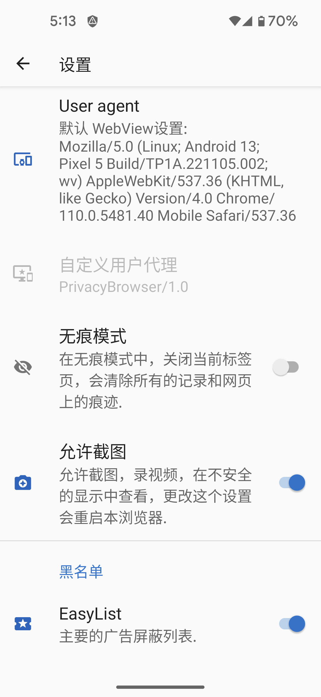

当 Web 浏览器连接到网站时，它们会发送一个UA，用于标识浏览器及其拥有的呈现功能。Web 服务器可以使用此信息来决定将哪个版本的网站发送给浏览器。例如，许多网站都有不同的桌面和移动浏览版本。
隐私浏览器默认使用自己的用户代理PrivacyBrowser/1.0。这发送最小的信息给网页提供商。因为网页提供商不能识别移动用户代理，他们会显示桌面浏览版本。
相比之下，WebView默认的UA暴露了设备的硬件和软件的大量信息。可以在设置，选择WebView默认设置作为UA显示将要被发送的UA。 下面的截图会显示Pixel 5在安卓13上下载的WebView110.0.5481.40。许多的网页提供商会当成移动浏览器来分析，并在他们有移动浏览页面时展示它。
仅有很少一部分用户访问网页的UA相同。如果UA结合其他不特定的信息，通常能得到一个特定的指纹。EFF创立了一个叫Cover Your Tracks的工具来展示可以从这些资源收集到多少信息。 Browser Leaks和Am I Unique也是一个很好的信息来源。
有几个预设的UA可以匹配常见的浏览器和开源系统，出于浏览器指纹识别的目的，任何罕见的都更容易追踪。如果很多人使用隐私浏览器，并且使用PrivacyBrowser/1.0作为他们的UA，是对保护隐私的一个好选择。
Firefox or Chrome是最常见的UA，但是他们会自动升级并且他们的版本更新的如此快，以致会和隐私浏览器的UA的日志产生冲突。
有的网页如果没识别到UA就不能正确打开。使用域名设置UAWebView 默认设置，或其他常见的UA，通常能解决这个问题。 Android’s WebView 不允许UA为空，如果为空的话会发送默认的UA给服务器。